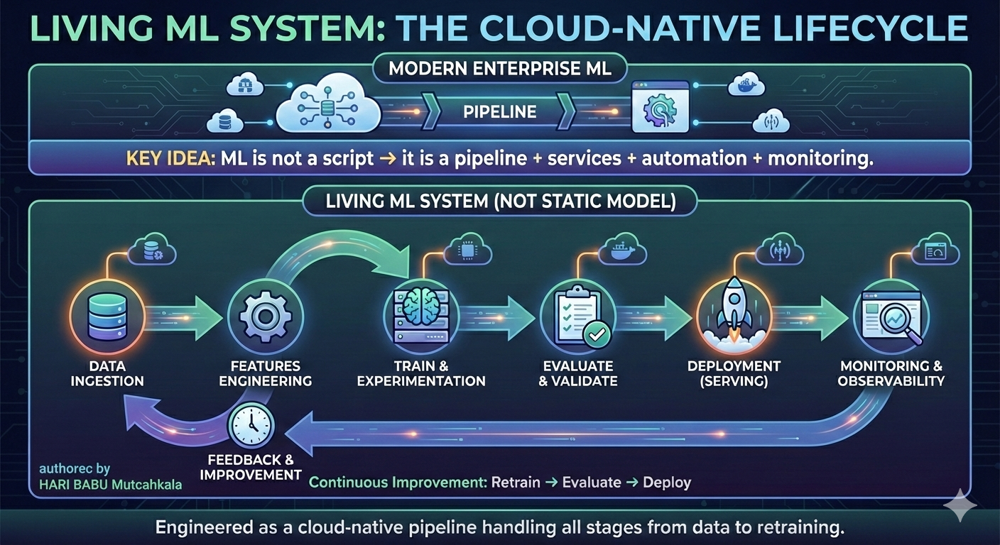
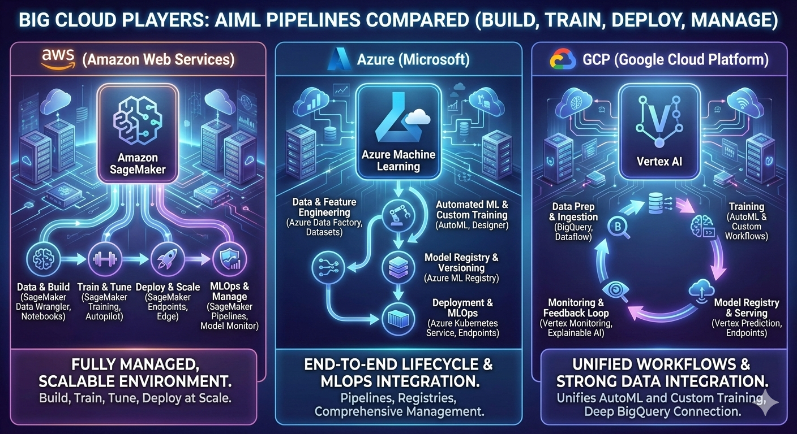

Building a Drug Discovery AI System
Where AI Stack and Model Workflow Move Together
👨💼 Expert View – How ML Engineers Must Think
Having seen multiple evolutions in the AI/ML industry, one lesson stands out: successful AI systems are not built by focusing on models alone.
Real-world ML engineers must design systems where AI stack layers and ML workflows evolve together. Infrastructure decisions affect training, data decisions affect evaluation, orchestration affects quality, and applications determine impact.
🌍 The Problem We Are Solving
Imagine building an AI system that helps researchers discover cancer drugs by reading and understanding every scientific paper published worldwide.
This system must continuously ingest new research, reason over it, cite evidence, and improve over time. Achieving this requires AI stack layers and ML workflows to work hand-in-hand.

🔁 Unified Flow: AI Stack × Model Workflow
The ML workflow is not separate from the AI stack. Each workflow stage activates a different layer of the stack:
- Data → Global research papers stored in cloud storage
- Features → Embeddings created using GPU-backed infrastructure
- Train → Models trained and tuned on SageMaker / Azure ML / Vertex AI
- Evaluate → Metrics tracked and compared automatically
- Deploy → Models served as scalable endpoints
- Monitor → Drift and accuracy tracked continuously
- Retrain → New data triggers pipelines again

🧠 Orchestration – The Brain of the System
Drug discovery is not a single prompt problem. The system must plan, retrieve, reason, verify, and respond.
Orchestration connects: models + data + tools + workflows into an intelligent execution graph.
- Break user queries into subtasks
- Retrieve relevant documents (RAG)
- Run reasoning and review loops
- Trigger retraining when confidence drops
🖥️ Application Layer – Where Value Is Created
The final system is exposed through a Full-Stack application (for example, MERN).
- React UI for researchers
- Node/Express APIs calling ML endpoints
- Secure integrations with lab systems
- Feedback captured for retraining
🚀 End-to-End Implementation using SageMaker, Azure ML & Vertex AI
Let us now see how the AI Stack and Model Workflow come together in a real production-grade Drug Discovery system using cloud-native ML platforms. This is where ML engineering becomes real system engineering.
🔁 Unified Cloud Workflow
- Data Ingestion – Research papers (PDFs, datasets, images) stored in cloud object storage
- Feature Engineering – Text cleaned, chunked, embedded using GPU-based compute
- Training – Models trained and tuned on managed ML platforms
- Evaluation – Metrics tracked, experiments compared automatically
- Deployment – Models exposed as secure, scalable endpoints
- Monitoring – Drift, accuracy, latency continuously observed
- Retraining – New scientific data automatically triggers pipelines
☁️ How Each Cloud Platform Plays the Role
- AWS SageMaker – S3 stores papers, SageMaker Processing cleans data, Training Jobs build models, Pipelines automate retraining, Endpoints serve predictions to applications.
- Azure ML – Blob Storage holds datasets, Azure ML Compute runs experiments, ML Pipelines manage lifecycle, Managed Endpoints expose models securely.
- GCP Vertex AI – Cloud Storage stores research, Vertex AI Training handles scaling, Pipelines orchestrate workflows, Prediction services power applications.
🧠 Where Orchestration Becomes Critical
Drug discovery queries are complex: the system must retrieve evidence, reason step-by-step, validate answers, and cite sources. Orchestration connects models, data, tools, and retraining triggers into a single intelligent workflow.
🖥️ Application Integration (Full-Stack)
The ML system finally connects to a Full-Stack application (e.g., MERN):
- Researchers search cancer drugs via UI
- APIs call SageMaker / Azure ML / Vertex AI endpoints
- Results include evidence and confidence
- User feedback feeds back into retraining pipelines

☁️ Why Cloud Is Non-Negotiable
Without cloud platforms like AWS SageMaker, Azure ML, and GCP Vertex AI, this system cannot exist.
- Elastic GPUs for training & embeddings
- Managed pipelines and endpoints
- Monitoring, security, compliance
- Global scale and reliability
🎯 Final Takeaway for ML Engineers
ML engineers who understand only models build experiments. ML engineers who understand AI stack + workflows together build systems that change industries.